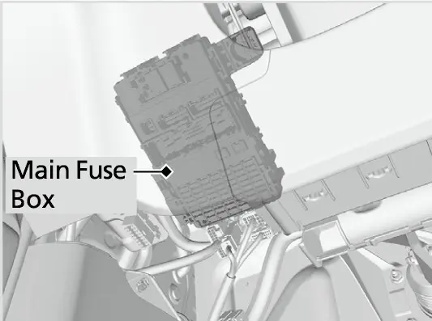
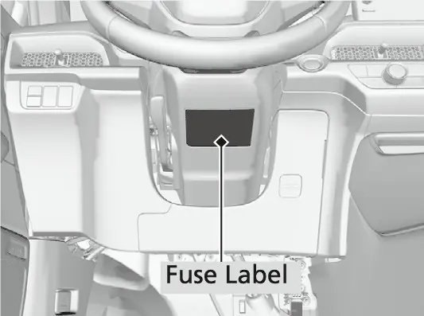
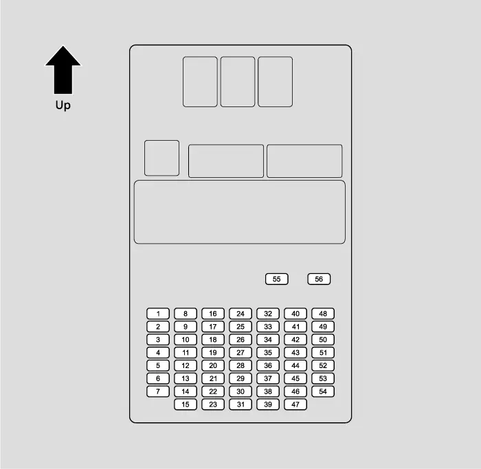
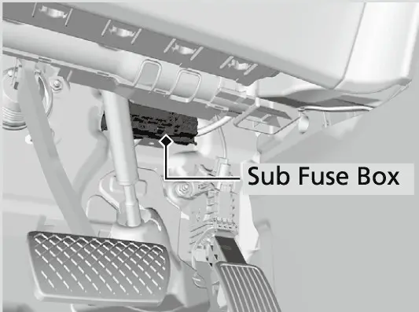
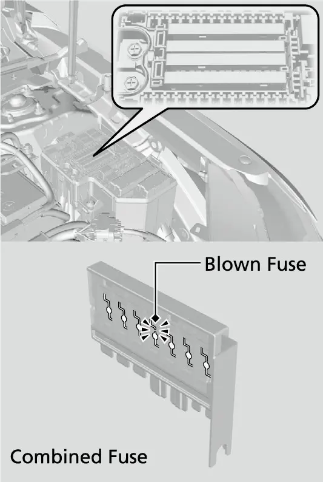

צוגאב B
פיוז טשארטס
זייטן 455–463 אינעם PDF
פיוז ערטער
אויב עפעס אן עלעקטרישע זאך ארבעט נישט, שטעלט דעם power mode (דער שטראם-מאדָע) אויף VEHICLE OFF (קאר אויסגעלאשן) און טשעקט צי א פאסיגער פיוז איז אויסגעברענט. אייער CR-V האט דריי פיוז קעסטלעך. געפינט דעם פיוז וואס איר זוכט לויט דעם פיוז נומער אויפן בילד און אין דער טאבעלע.
פיוז קעסטל אונטער דער האוד
דער פיוז קעסטל אונטער דער האוד ליגט לעבן דער באטעריע. דריקט די טאבס (די קליינע קלאמערלעך) צו עפענען דאס קעסטל.

אינעווייניגער הויפט פיוז קעסטל
דער אינעווייניגער הויפט פיוז קעסטל ליגט אונטערן דעשבארד.


אינעווייניגער נעבן-פיוז קעסטל
דער אינעווייניגער נעבן-פיוז קעסטל ליגט אויך אונטערן דעשבארד. זיינע ערטער זענען אנגעצייכנט מיט די אותיות A ביז H.


טאבעלע פונעם פיוז קעסטל אונטער דער האוד
ערטער 1 ביז 5 האלט יעדער עטליכע סירקיטס. יעדער סירקיט האט זיין אייגענע שורה, און דער נומער פונעם ארט ווערט איבערגעחזרט.
פיוז קעסטל אונטער דער האוד
| נומער | באשיצטער סירקיט | אמפער |
|---|---|---|
| 1 | MAIN FUSE | 150 A |
| 2 | I/S2 | (30 A) |
| 2 | - | 40 A |
| 2 | F/BOX OPTION1 | 60 A |
| 2 | PTC HTR1 (נישט אויף אלע מאדעלן) | (40 A) |
| 2 | F/BOX OPTION2 | 60 A |
| 2 | - | 60 A |
| 2 | F/BOX MAIN1 | 60 A |
| 3 | - | (30 A) |
| 3 | ST MAGNETIC SW | 30 A |
| 3 | PTC HTR3 (נישט אויף אלע מאדעלן) | (40 A) |
| 3 | RR DEF | 30 A |
| 3 | - | 50 A |
| 3 | HTR MTR | 40 A |
| 3 | PTG MTR (נישט אויף אלע מאדעלן) | (40 A) |
| 4 | ABS/VSA FSR | 40 A |
| 4 | ABS/VSA MTR | 40 A |
| 4 | - | 40 A |
| 4 | E BOOSTER | 40 A |
| 4 | IG MAIN1 | 30 A |
| 4 | - | 40 A |
| 4 | IG MAIN2 | 30 A |
| 5 | I/S1 | (30 A) |
| 5 | WIPER | 30 A |
| 5 | EPS | 70 A |
| 5 | - | 30 A |
| 5 | - | 40 A |
| 5 | MAIN FAN | 30 A |
| 5 | F/BOX MAIN2 | 60 A |
| 6 | SUB FAN | 30 A |
| 7 | SRM2 | 20 A |
| 8 | - | - |
| 9 | BACK UP | 10 A |
| נומער | באשיצטער סירקיט | אמפער |
|---|---|---|
| 10 | FR WIPER DEICER (נישט אויף אלע מאדעלן) | (15 A) |
| 11 | - | - |
| 12 | - | - |
| 13 | - | - |
| 14 | - | - |
| 15 | FR FOG | (10 A) |
| 16 | - | - |
| 17 | A/C MG CLUTCH | 10 A |
| 18 | HORN | 15 A |
| 19 | FR WASHER | 15 A |
| 20 | AUDIO (נישט אויף אלע מאדעלן) | 15 A |
| 21 | SRM1 | 20 A |
| 22 | DBW | 15 A |
| 23 | HAZARD | 10 A |
| 24 | VBU | 10 A |
| 25 | IGP | 15 A |
| 26 | TCU | 10 A |
| 27 | LCM L | 20 A |
| 28 | INJ | 20 A |
| 29 | STOP | 10 A |
| 30 | LCM R | 20 A |
| 31 | IG COIL | 15 A |
| 32 | - | - |
| 33 | - | - |
| 34 | - | - |
| 35 | - | - |
| 36 | AUDIO MAIN VST | (15 A) |
| 37 | - | - |
| 38 | - | - |
| 39 | IGPS VBACT | 7.5 A |
| 40 | IGPS FAN | 7.5 A |
| 41 | IGPS LAF | 7.5 A |
| 42 | MON2 | 5 A |
טאבעלע פונעם אינעווייניגן הויפט פיוז קעסטל
אינעווייניגער הויפט פיוז קעסטל
| נומער | באשיצטער סירקיט | אמפער |
|---|---|---|
| 1 | P/W DR | 20 A |
| 2 | P/W AS | 20 A |
| 3 | P/W RR R | 20 A |
| 4 | P/W RR L | 20 A |
| 5 | OPTION | 10 A |
| 6 | SRS | 10 A |
| 7 | T/G MTR / TRUNK ACT (נישט אויף אלע מאדעלן) | (10 A) |
| 8 | RVU (נישט אויף אלע מאדעלן) | 10 A |
| 9 | FR ACC SOCKET | 20 A |
| 10 | DOOR LOCK | 20 A |
| 11 | METER | 10 A |
| 12 | OPTION 3 (ST CUT) | 10 A |
| 13 | OPTION 2 | 10 A |
| 14 | OPTION 6 (VB SOL) | 10 A |
| 15 | DR DOOR UNLOCK | (10 A) |
| 16 | IMG | 10 A |
| 17 | YOP TRAILER (נישט אויף אלע מאדעלן) | (20 A) |
| 18 | HAC OP (נישט אויף אלע מאדעלן) | (20 A) |
| 19 | - | - |
| 20 | USB CHG (נישט אויף אלע מאדעלן) | 10 A |
| 21 | CARGO ACC SOCKET | 20 A |
| 22 | SMART | 10 A |
| 23 | DR DOOR LOCK | (10 A) |
| 24 | E-DPS (נישט אויף אלע מאדעלן) | 20 A |
| 25 | - | - |
| 26 | SRS | 10 A |
| 27 | ACG | 10 A |
| 28 | OPTION 5 (ABS) | 10 A |
| 29 | FUEL PUMP | 20 A |
| 30 | L SIDE DOOR UNLOCK | 10 A |
| 31 | R SIDE DOOR UNLOCK | 10 A |
| נומער | באשיצטער סירקיט | אמפער |
|---|---|---|
| 32 | SUN ROOF (נישט אויף אלע מאדעלן) | 20 A |
| 33 | USB CHG PD | 10 A |
| 34 | - | - |
| 35 | SUN SHADE (נישט אויף אלע מאדעלן) | 20 A |
| 36 | RR H/SEAT (נישט אויף אלע מאדעלן) | (20 A) |
| 37 | - | - |
| 38 | RR BLOWER (נישט אויף אלע מאדעלן) | 20 A |
| 39 | R SIDE DOOR LOCK | 10 A |
| 40 | DR P/SEAT SLIDE (נישט אויף אלע מאדעלן) | 20 A |
| 41 | DR P/SEAT REC (נישט אויף אלע מאדעלן) | 20 A |
| 42 | - | - |
| 43 | OPTION | 10 A |
| 44 | DRL | 5 A |
| 45 | ACC | 10 A |
| 46 | - | - |
| 47 | L SIDE DOOR LOCK | 10 A |
| 48 | H/SEAT (נישט אויף אלע מאדעלן) | (20 A) |
| 49 | AS P/SEAT REC (נישט אויף אלע מאדעלן) | 20 A |
| 50 | P/LUMBAR DR/AS (נישט אויף אלע מאדעלן) | 10 A |
| 51 | - | - |
| 52 | PTG CLOSER (נישט אויף אלע מאדעלן) | (20 A) |
| 53 | AS P/SEAT SLI (נישט אויף אלע מאדעלן) | 20 A |
| 54 | OPTION1 | 10 A |
| 55 | - | - |
| 56 | - | - |
טאבעלע פונעם אינעווייניגן נעבן-פיוז קעסטל
אינעווייניגער נעבן-פיוז קעסטל
| נומער | באשיצטער סירקיט | אמפער |
|---|---|---|
| A | ACC | (5 A) |
| B | EOP | (10 A) |
| C | - | - |
| D | METER | (10 A) |
| נומער | באשיצטער סירקיט | אמפער |
|---|---|---|
| E | OPTION | (10 A) |
| F | - | - |
| G | - | - |
| H | - | - |
פיוזן טשעקן און טוישן
פיוזן טשעקן און טוישן
- שטעלט דעם power mode אויף VEHICLE OFF. לעשט אויס די העדלייטס און אלע צוגאבן.
- נעמט אראפ דעם דעקל פונעם פיוז קעסטל.
- טשעקט דעם הויפט פיוז אינעם פיוז קעסטל אונטער דער האוד. קוקט אויפן פיוז דורכן לעכל. אויב דער פיוז איז אויסגעברענט, לאזט אים טוישן ביים דילער.
- טשעקט די צוזאמענגעשטעלטע פיוזן אינעם פיוז קעסטל אונטער דער האוד. קוקט אריין אינעם רווח צווישן די פיוזן. אויב א פיוז איז אויסגעברענט, לאזט אים טוישן ביים דילער.
- טשעקט די קליינע פיוזן אונטער דער האוד און אינעווייניג אינעם קאר. אויב א פיוז איז אויסגעברענט, נעמט אים ארויס מיטן פיוז ציער און שטעלט אריין א נייעם.

- ניצט די טאבעלעס צו געפינען דעם פיוז, און באשטעטיגט די פארשריבענע אמפער אויפן פיוז לעיבל.
- טוישט אים מיט א פיוז פון די זעלבע פארשריבענע אמפער.
- אויף דער הינטערשטער זייט פונעם דעקל פונעם פיוז קעסטל אונטער דער האוד געפינט זיך א פיוז ציער.